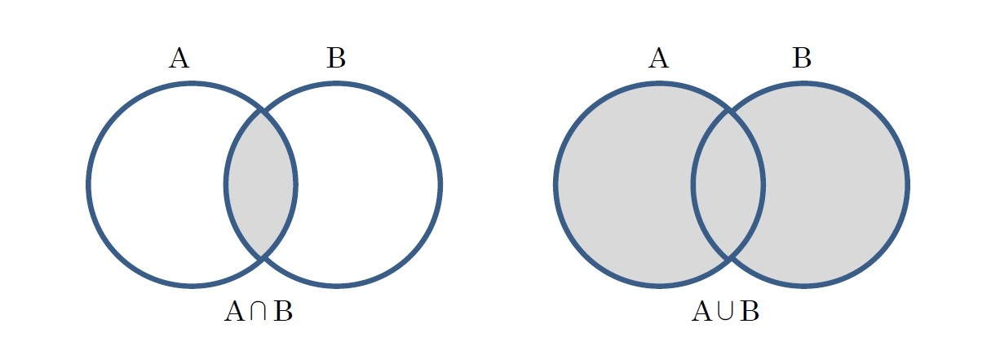

1. 型と変数#
1.1. Hello, World!#
print("Hello, World!")
Hello, World!
これは「"Hello, World" という文字列を表示するプログラム」で、最も単純かつ有名なプログラムです。よく、初心者向けの教材の 1 ページ目や動作確認などで登場します。この教材もその慣習に則ってみました。
このとても単純なコードは何をしているのでしょうか。
"Hello, World": これは 文字列 (string) です。ダブルクォーテーション (
") または、シングルクォーテーション (') で囲まれたものは、文字列として扱われます。
print: これは 丸括弧()内のものを表示する 関数 (function) です。関数については 5 章で詳しく学習します。
なので、print("Hello, World") は「"Hello, World" という文字列を表示する」ことができるのです。
Tip
Python のきれいなプログラムは英文のように読めることがあります。print("Hello, World!") は、そのまま「Print “Hello, World!”」と解釈することができ、あなたが Python に「”Hello, World!” と表示しろ！」と命令しているのです。
1.2. 型 (type)#
プログラミングには 型 (type) という考え方があります。さっき出てきた 文字列 も型の一つです。簡単に言うとプログラミングで扱うことができる概念の種類みたいなものです。百聞は一見にしかずということで、詳しい説明はあとの章でやるとして、まずは色々と見てみましょう。
Tip
「そういうものだ」ということにして、分かるようになってから戻ってくることも大事。
下のコードを使って色々な型を見ていきます。type 関数は入力された値がなんの型なのかを返す関数です。ちなみに、print 関数はカンマ区切りで複数の値を入力すると、空白区切りで出力されます。
print("文字列", "こんにちは", type("こんにちは"))
文字列 こんにちは <class 'str'>
振り返りになりますが "" で囲んだものは文字列になるということだったので、"こんにちは" は文字列です。
なので、type("こんにちは") の結果は、文字列型を示す <class 'str'> となります。（str は string の略です。）
まずは、数 について見ていきましょう。 Python には、整数型 (int) や実数型 (float)、さらに複素数型 (complex) が用意されています。
print("整数", 1234, type(1234))
print("実数", 3.14, type(3.14))
print("複素数", 1 + 2j, type(1 + 2j))
整数 1234 <class 'int'>
実数 3.14 <class 'float'>
複素数 (1+2j) <class 'complex'>
なにか計算を行うときは、これらの型を使います。（複素数を使うことは物理系でなければほぼないと思いますが…）
では、続いて シーケンス です。簡単に言えば、何かを並べたものです。
print("リスト", [1, 5.2, "hello"], type([1, 5.2, "hello"]))
print("レンジ", range(100), type(range(100)))
print("文字列", "こんばんわ", type("こんばんわ"))
リスト [1, 5.2, 'hello'] <class 'list'>
レンジ range(0, 100) <class 'range'>
文字列 こんばんわ <class 'str'>
確かに、リストは何かが並んでいるように見えますね。
レンジは分かりにくいですが、range(0, 100) は 0 から始まる 100 個の整数 0, 1, 2,...,99 の並びを意味しています。
文字列も文字を並べたものなので、これらの仲間です。
Tip
（再掲）「そういうものだ」ということにして、分かるようになってから戻ってくることも大事。
どんどん行きます。次は、辞書 (dict) です。対応関係を表すのに使います。
print("辞書", {"one": 1, "two": 2}, type({"one": 1, "two": 2}))
辞書 {'one': 1, 'two': 2} <class 'dict'>
ここでは、「one は 1」「two は 2」のような対応関係を表しています。
ここからは、日常生活ではあまり使わないプログラミングらしい用語が出てきます。
まずは、真偽値 (bool) です。
print("真偽値", True, type(True))
print("真偽値", False, type(False))
真偽値 True <class 'bool'>
真偽値 False <class 'bool'>
与えられた命題が本当か嘘かを表すときに使います。
例えば、「日本の首都は横浜である。」は嘘なので False です。
次は、関数 (function) です。簡単に言うと、何かを入れると処理をするものです。 処理だけするものもあれば、処理結果を返すものもあります。
では、今まで使ってきた print 関数と初登場の max 関数の型を見てみましょう。
print("結果を表示する関数", print, type(print))
print("最大値を求める関数", max, type(max))
結果を表示する関数 <built-in function print> <class 'builtin_function_or_method'>
最大値を求める関数 <built-in function max> <class 'builtin_function_or_method'>
builtin_function_or_method と表示されました。builtin というのは元から用意されているという意味です。
なので、「元から用意された関数（またはメソッド）ですよ」と表示されています。
後で学習しますが、関数は自作することもできます。ここでは、a + b を計算する関数を定義してみました。
def my_function(a, b):
return a + b
print("足し算する自作関数", my_function, type(my_function))
足し算する自作関数 <function my_function at 0x7f587cf87940> <class 'function'>
すると、今回は builtin ではなくただの function として表示されました。
とりあえず、紹介はこのくらいにして、次章以降でそれぞれについて詳しく学びましょう。
ここからは、重要だけど最初に紹介するのはちょっと難しいかなと思ったものです。 体力が残っている方はぜひ読んでみてください。
まずは、None (ナン) です。
print("None", None, type(None))
None None <class 'NoneType'>
これは何なんですかね。ナンだけに。
冗談は置いといて、None は「なにもない」ことを表すときに使います。
None がプログラミングに必要な理由は、この画像が一番わかりやすいと思います。（NULL と None は同じ概念です。）
{kind=link}
出典: https://www.reddit.com/r/ProgrammerHumor/comments/6f68rv/difference_between_0_and_null/
None という概念があるおかげで、トイレットペーパが空っぽなのか、存在自体がないのか、を使い分けることができます。
次は、集合です。
print("集合", {1, 2, 3, 2, 1}, type({1, 2, 3, 2, 1}))
集合 {1, 2, 3} <class 'set'>
あまり使う機会は少ないかもしれませんが、数学の集合の計算ができるのでたまに役立ちます。
{kind=link}
出典: https://www.nli-research.co.jp/report/detail/id=63317
ここまで様々な型を紹介しましたが、型（クラス）を自作することもできます。
class Human:
def __init__(self, name):
self.name = name
def __str__(self):
return self.name
human = Human(name="大谷翔平")
print("人間型（自作）", human, type(human))
人間型（自作） 大谷翔平 <class '__main__.Human'>